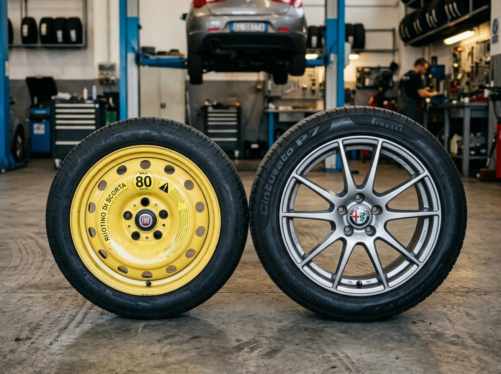
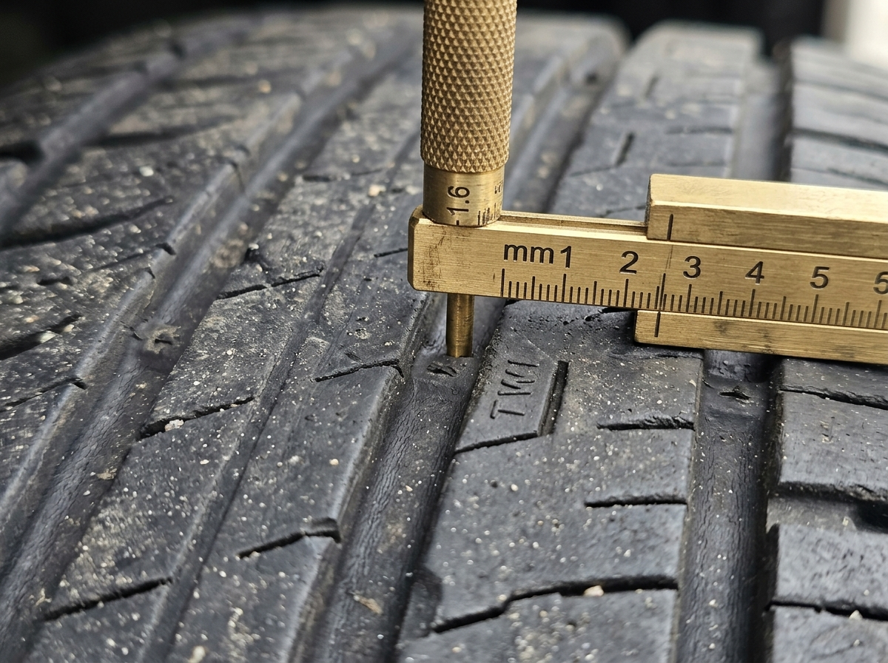
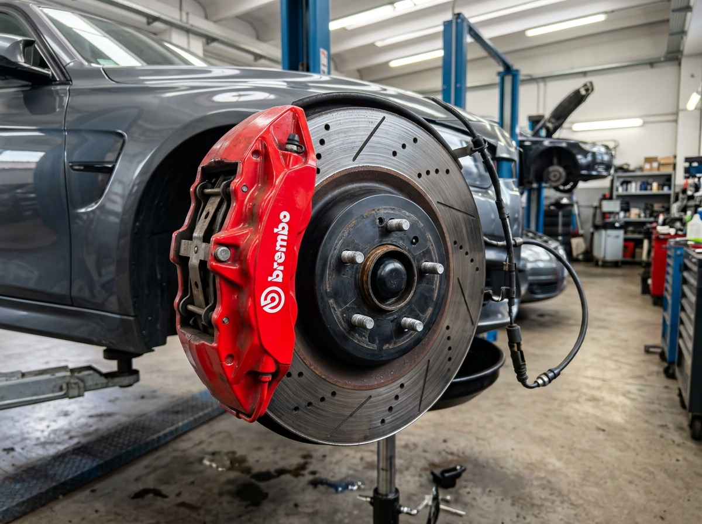
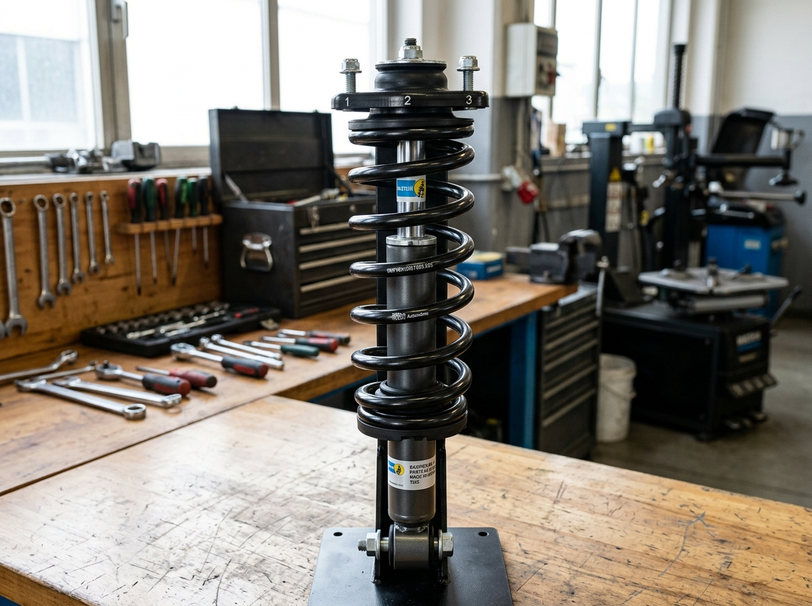
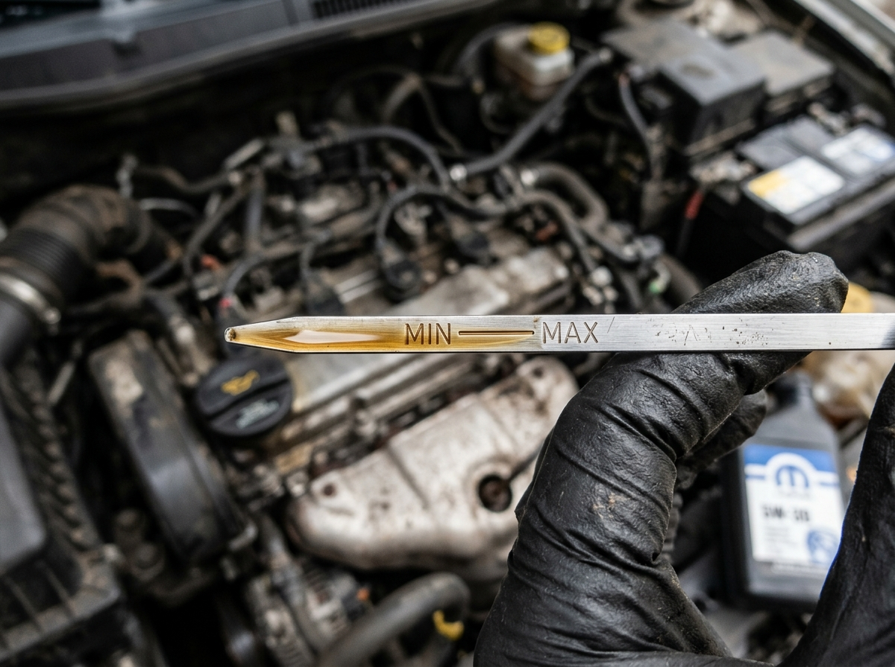

الباب الأخير (25): الميكانيكا، صيانة المركبة، والإطارات وأجهزة الأمان
الدليل الهندسي والتقني الأكبر والأشمل لرخصة القيادة الإيطالية Patente B: منظومة الفرامل الهيدروليكية ومؤازر الفرامل (Servofreno)، نظام منع انغلاق المكابح الثوري (ABS) وحقيقة الحفاظ على التوجيه، عمق نقشة الإطارات القانوني (1.6 مم / 1.0 مم / 0.5 مم)، عجلة الطوارئ البديلة (Ruotino 80 km/h)، نظام التعليق وممتصات الصدمات (Ammortizzatori)، منظومة التوجيه وضبط الزوايا، فحص مستويات السوائل الحيوية (الزيت والتبريد والفرامل)، ودلالات لمبات التابلوه التحذيرية وأجهزة الأمان التفاعلية.
قمرة القيادة ولمبات التابلوه التحذيرية (Spie del Cruscotto Interattive)
انقر فوق أي لمبة تحذيرية لتشغيل إضاءتها النبضية، سماع نغمة التنبيه، واكتشاف دلالتها الميكانيكية والفخاخ الامتحانية الصارمة:
لمبة ضغط زيت المحرك الحمراء (Mancanza di pressione dell'olio motore)
الإجراء الفوري: يجب التوقف بأمان على جانب الطريق وإطفاء محرك السيارة فوراً؛ لأن مواصلة السير لدقائق قليلة تؤدي إلى قفش وتدمير أجزاء المحرك الميكانيكية بالكامل (Fusione del motore).
الفحص: التحقق من منسوب الزيت بمقياس الزيت اليدوي (Asta di livello) بعد أن يبرد المحرك، وإضافة زيت مطابق للمواصفات.
المعرض الفوتوغرافي الواقعي: أجهزة الأمان وقطع الصيانة الميكانيكية
صور حقيقية بدقة فائقة من ورش الصيانة الإيطالية للمكونات الميكانيكية التي يركز عليها واضع الامتحان الوزاري، مع إبراز نقاط الفحص والفخاخ القانونية:

MAX 80 km/h | ~4 barعجلة الطوارئ البديلة vs الإطار المعتاد
• الحجم والخصائص: أصغر حجماً وأقل عرضاً وخفةً من الإطار المعتاد، ومخصصة فقط للطوارئ المؤقتة للوصول لأقرب ورشة إصلاح.
• السرعة والضغط: سرعتها القصوى 80 كم/س فقط وضغط نفخها مرتفع (حوالي 4 بار) لتعويض صغر حجمها.
• السلوك الحركي: تركيبها يغير اتزان المركبة في الفرملة والمنعطفات؛ لذا يحظر القيادة بها لمسافات طويلة.

1.6 mm الحد الأدنى | TWIمداس الإطار ومؤشر التآكل القانوني
• الحدود القانونية الإلزامية:
🚗 السيارات والمقطورات = 1.6 مم كحد أدنى.
🏍️ الدراجات النارية (Motoveicoli) = 1.0 مم.
🛵 السيكلوموتوري (Ciclomotori) = 0.5 مم.
• مؤشر TWI: نتوءات مطاطية مدمجة بأخاديد الإطار؛ تآكل المداس حتى يلامسها يستوجب استبدال الإطار فوراً لمنع الانزلاق المائي (Aquaplaning).

Freni a Disco | Servofrenoأقراص وتيل الفرامل ومؤازر الفرملة
• تيل وأقراص الفرامل: أجزاء استهلاكية تتآكل بالاحتكاك؛ تآكل التيل الشديد يصدر صوتاً معدنياً ويقلل كفاءة التوقف.
• مؤازر الفرامل (Servofreno): يخفف الجهد العضلي المطلوب للضغط على الدواسة، ويعمل فقط عندما يكون المحرك دائراً.
• المحرك مطفأ: إذا انطفأ المحرك (أثناء القطر مثلاً) تظل الفرامل تعمل ولكن الدواسة تتحجر وتتطلب ضغطاً عضلياً مضاعفاً للتوقف.

Ammortizzatore & Mollaممتص الصدمات والياي اللولبي
• الوظيفة الحيوية: ممتص الصدمات يخمد ارتداد النوابض ويمنع قفز الإطارات، محققاً الالتصاق الدائم للكاوتش بسطح الطريق.
• الممتصات التالفة (Scarichi): تسبب تمايل السيارة وانغماس مقدمتها للأمام في الفرملة (Beccheggio)، وتأرجحها في المنحنيات (Rollio).
• الأخطار: تزيد مسافة التوقف، تسبب تآكلاً متموجاً غير منتظم للإطارات، وتؤدي لانحراف حزمة المصابيح وانبهار السائقين المقابلين.

Asta Livello | MIN - MAXمقياس زيت المحرك اليدوي والتزييت
• طريقة الفحص القانونية: توقف السيارة على أرض مستوية أفقياً، والمحرك مطفأ وبارد (A motore spento e freddo).
• العلامات: يجب أن يكون مستوى الزيت بين علامتي MIN و MAX؛ ولا يجوز أن يقل عن الحد الأدنى ولا يتجاوز الحد الأقصى.
• تزييت المحرك: الزيت يمنع احتكاك المعادن ويبرد الأجزاء الداخلية؛ نقص الزيت الشديد يدمر السلندرات والكرنك.
البطاقات المعرفية المعتمدة للميكانيكا والصيانة والسلامة
منظومة الفرامل الهيدروليكية (Freni a disco e a tamburo)
Impianto frenante idraulico, freni a disco e pastiglieالدائرة الهيدروليكية المسؤولة عن كبح وتوقيف المركبة؛ عمل الأقراص والتيل، وتأثير تآكل وسادات الفرامل وسائل الكبح.
- ✅ تعمل فرامل الخدمة في السيارات بنظام هيدروليكي ينقل الضغط عبر سائل الفرامل إلى أسطوانات الكبح على العجلات الأربع
- ✅ تآكل وسادات الفرامل (Pastiglie freni) يؤدي إلى انخفاض كفاءة الكبح وإصدار صوت صفير معدني واحتكاك حاد عند الضغط على الدواسة
- ✅ هبوط مستوى سائل الفرامل في الخزان تحت علامة الحد الأدنى (MIN) يشير إلى وجود تسريب في الدائرة أو تآكل متقدم جداً في وسادات الفرامل
- ✅ يجب استخدام سائل الفرامل المحدد حصرياً من قبل الشركة المصنعة واستبداله دورياً وفق كتيب الصيانة
- ❌ سائل الفرامل يمكن استبداله بماء الصنبور العادي أو زيت الطهي في حالات الطوارئ ❌
- ❌ تآكل وسادات الفرامل يؤدي إلى تقصير مسافة الفرملة وزيادة قوة التوقف ❌
- ❌ الفرامل القرصية (A disco) لا تحتاج أبداً لأي صيانة أو فحص طوال عمر السيارة ❌
مؤازر الفرامل الميكانيكي (Il Servofreno)
Funzionamento del servofreno a motore acceso e spentoالجهاز الهوائي المعاون الذي يضاعف قوة ضغط قدم السائق على دواسة الفرامل؛ ارتباطه المباشر بتشغيل المحرك ومخاطر إطفاء المحرك أثناء السير.
- ✅ مؤازر الفرامل (Servofreno) يعمل فقط عندما يكون محرك السيارة مشغلاً (A motore avviato)
- ✅ إذا انطفأ المحرك أثناء السير أو أثناء قطر المركبة، يتوقف مؤازر الفرامل عن العمل وتصبح دواسة الفرامل ثقيلة وقاسية جداً
- ✅ عند تعطل مؤازر الفرامل، تظل منظومة الفرامل تعمل ميكانيكياً وهيدروليكياً ولكنها تتطلب ضغطاً عضلياً كبيراً جداً بالقدم لإيقاف السيارة
- ✅ يحظر تماماً إطفاء محرك السيارة أثناء النزول من المنحدرات لأن ذلك يعطل مؤازر الفرامل ومؤازر المقود ويفقد السائق السيطرة
- ❌ مؤازر الفرامل يعمل بكفاءة مضاعفة عندما يكون المحرك مطفأ تماماً ❌
- ❌ عند تعطل مؤازر الفرامل تفقد السيارة الفرامل تماماً وتصبح الدواسة رخوة تصل إلى أرضية السيارة دون مقاومة ❌
- ❌ مؤازر الفرامل مخصص فقط لفرملة العجلات الخلفية أثناء الركن ❌
نظام منع انغلاق المكابح (ABS) والحفاظ على التوجيه
Sistema antibloccaggio delle ruote in frenata (ABS)أهم تقنية أمان نشطة في السيارات؛ منع انغلاق العجلات أثناء الفرملة القصوى لضمان استمرار قدرة السائق على توجيه السيارة وتفادي الاصطدام.
- ✅ الوظيفة الأساسية لنظام ABS هي منع انغلاق العجلات أثناء الفرملة الشديدة لضمان بقاء السيارة قابلة للتوجيه بالمقود (Mantenere la guidabilità)
- ✅ يتيح نظام ABS للسائق إمكانية الانعطاف وتفادي العوائق والمشاة حتى أثناء الضغط بأقصى قوة على دواسة الفرامل
- ✅ ارتجاج ونبضات دواسة الفرامل تحت قدم السائق أثناء الفرملة القصوى أمر طبيعي تماماً يدل على تدخل صمامات ABS الهيدروليكية بكفاءة
- ✅ نظام ABS يتدخل بشكل مستقل على كل عجلة لمنع انزلاقها وفقاً لدرجة تماسك الأسفلت تحت كل إطار
- ❌ نظام ABS يضمن دائماً تقصير مسافة الفرملة في كافة الظروف وعلى الطرق المغطاة بالثلوج والحصى ❌
- ❌ ارتجاج دواسة الفرامل أثناء الفرملة العنيفة يعتبر عطلاً خطيراً يوجب التوقف الفوري واستدعاء الونش ❌
- ❌ نظام ABS يعطل عمل مقود السيارة ويمنع السائق من توجيهها أثناء الكبح ❌
فرملة التثبيت والركن اليدوية (Freno di stazionamento)
Freno di stazionamento (a mano) e bloccaggio delle ruoteفرملة الركن الميكانيكية المستقلة عن الدائرة الهيدروليكية؛ تثبيت السيارة المتوقفة في المنحدرات والتحكم بالعجلات الخلفية.
- ✅ فرملة التثبيت (Freno di stazionamento / فرامل اليد) تعمل ميكانيكياً عبر كابلات سلكية على عجلات المحور الخلفي عادة للمركبة
- ✅ تستخدم لتثبيت السيارة ومنع تحركها أثناء الركن والوقوف التام، وبخاصة على الطرق المنحدرة
- ✅ يمكن استخدامها كفرملة طوارئ بديلة بحذر وتدرج شديد في حال الانهيار التام لدائرة فرامل الخدمة الهيدروليكية
- ✅ يجب التأكد من إنزال ذراع فرملة اليد بالكامل قبل الانطلاق بالسيارة لتجنب ارتفاع حرارة وتآكل الفرامل الخلفية
- ❌ فرملة الركن تعمل هيدروليكياً على العجلات الأربع بقوة تعادل ضعف فرامل الخدمة ❌
- ❌ يجب شد فرملة اليد بأقصى قوة أثناء القيادة بسرعة 100 كم/س للمساعدة في تجاوز المنعطفات ❌
- ❌ فرملة اليد تعفي السائق من تعشيق الغيار الأول عند ركن السيارة في صعدة جبلية شديدة ❌
الحدود القانونية لعمق مداس الإطارات (Battistrada dei pneumatici)
Spessore minimo del battistrada per autoveicoli, motoveicoli e ciclomotoriالمقاييس القانونية الصارمة لعمق نقشة الإطار وفق كود السير؛ لضمان تصريف المياه ومنع الانزلاق وتفادي الحوادث.
- ✅ الحد الأدنى لعمق الأخاديد الرئيسية لمداس إطارات السيارات والمركبات الخفيفة والمقطورات هو 1.6 مم (1,6 mm per autoveicoli)
- ✅ الحد الأدنى لعمق مداس إطارات الدراجات النارية (Motoveicoli) هو 1.0 مم (1,0 mm per motoveicoli)
- ✅ الحد الأدنى لعمق مداس إطارات الدراجات البخارية الصغيرة (Ciclomotori) هو 0.5 مم (0,5 mm per ciclomotori)
- ✅ يجب أن يتوفر هذا العمق الأدنى على كامل محيط الإطار وفي نطاق الأخاديد الرئيسية المركزية للمداس
- ❌ الحد الأدنى لعمق مداس إطارات السيارات هو 3.5 مم تحت طائلة سحب الرخصة فوراً ❌
- ❌ يسمح بالقيادة بإطارات ممسوحة ملساء تماماً طالما كان الطقس صيفياً مشمساً ❌
- ❌ إطارات الموتوسيكلات تشترط عمقاً أدنى 2.5 مم كإطارات الشاحنات الثقيلة ❌
عجلة الطوارئ البديلة وقيودها الصارمة (Il Ruotino di soccorso)
Uso corretto del ruotino di scorta e limitazioni di velocitàالإطار البديل المصغر المخصص للطوارئ؛ قيود السرعة المحددة بـ 80 كم/س، ارتفاع ضغط النفخ، والاستخدام المؤقت لحين الإصلاح.
- ✅ عجلة الطوارئ (Ruotino di soccorso) مخصصة حصرياً للاستخدام المؤقت والاضطراري للوصول إلى أقرب ورشة لإصلاح الإطار الأصلي
- ✅ يحظر تجاوز سرعة 80 كم/ساعة عند تركيب عجلة الطوارئ على أي محور من محاور السيارة (Velocità max 80 km/h)
- ✅ تتطلب عجلة الطوارئ ضغط نفخ هوائي مرتفعاً بشكل ملحوظ مقارنة بالإطارات العادية (حوالي 4 بار أو 4.2 بار)
- ✅ بسبب صغر عرض عجلة الطوارئ واختلاف قطرها، يتأثر اتزان وسلوك السيارة في المنحنيات والفرملة ويجب القيادة بحذر شديد
- ❌ يسمح بالسير بعجلة الطوارئ بسرعة 130 كم/س على الأوتوستراد لقطع مسافات طويلة ❌
- ❌ عجلة الطوارئ يمكن استخدامها بصفة دائمة كبديل نهائي للإطار الممزق ❌
- ❌ ضغط نفخ عجلة الطوارئ يجب أن يكون منخفضاً جداً (أقل من 1 بار) لتوفير الراحة ❌
خطوات الاستبدال الآمن للعجلة المثقوبة (Sostituzione della ruota)
Procedura corretta per la sostituzione di una ruota forata con cricالترتيب الهندسي الإلزامي لاستبدال الإطار باستخدام الرافعة (Cric) ومفتاح الصواميل؛ تثبيت السيارة وفك الصواميل بنظام التقاطع.
- ✅ قبل رفع السيارة بالرافعة، يجب ركنها على أرضية مستوية وصلبة، وتعشيق الغيار الأول، وشد فرملة اليد، وتشغيل أضواء الطوارئ
- ✅ يجب فك وخلخلة صواميل العجلة (Allentare i bulloni) جزئياً أثناء ملامسة الإطار للأرض وقبل رفع السيارة بالرافعة
- ✅ توضع الرافعة (Cric) حصرياً في نقاط الارتكاز المخصصة والمقواة أسفل هيكل السيارة المحددة في الكتالوج
- ✅ عند تركيب العجلة البديلة، يجب ربط الصواميل بشكل متقاطع (A croce) لضمان استقرار العجلة وتمركزها السليم على الصرة
- ❌ يجب فك وإزالة كافة صواميل العجلة بالكامل قبل وضع الرافعة ورفع السيارة ❌
- ❌ توضع الرافعة الهيدروليكية مباشرة تحت خزان الوقود أو أنبوب العادم لرفع السيارة ❌
- ❌ يتم ربط الصواميل بشكل دائري متتابع في اتجاه عقارب الساعة لضمان الأمان ❌
الإطارات بدون غرفة هواء داخلية (Pneumatici Tubeless)
Pneumatici senza camera d'aria (Tubeless) e sicurezza contro lo scoppioتقنية الإطارات الحديثة الخالية من الأنبوب المطاطي الداخلي؛ ميزة الاحتفاظ بالهواء وتفريغه ببطء عند الثقب لتفادي الانفجار المفاجئ.
- ✅ الإطارات من نوع تيوبلس (Tubeless) لا تحتوي على غرفة هواء داخلية (Camera d'aria)، بل يلتصق الإطار بإحكام مباشر بحافة الجنط المعدني
- ✅ في حال ثقب الإطار بمسمار، يظل المسمار غالباً محشوراً ويسرب الهواء ببطء شديد وتدريجي دون انفجار فجائي للإطار
- ✅ يتيح التفريغ البطيء للهواء في إطارات التيوبلس للسائق الحفاظ على مسار السيارة والتوقف بأمان دون فقدان السيطرة
- ✅ يحظر تركيب غرفة هواء داخلية (Camera d'aria) داخل إطار مخصص ليعمل بنظام Tubeless
- ❌ إطارات التيوبلس تنفجر كالقنبلة فور ملامستها لأي مسمار صغير على الطريق ❌
- ❌ يجب ملء إطارات التيوبلس بالماء والزيت بدلاً من الهواء المضغوط ❌
- ❌ إطارات التيوبلس تستخدم فقط للدراجات الهوائية للأطفال ❌
تلف ممتصات الصدمات ومخاطره على الاتزان (Ammortizzatori scarichi)
Ammortizzatori inefficienti, usura irregolare gomme e tenuta di stradaأهمية المساعدين في امتصاص ارتداد النوابض؛ عواقب تلفها في تمايل السيارة، زيادة مسافة التوقف، وتآكل الإطارات المتموج.
- ✅ تلف ممتصات الصدمات (Ammortizzatori scarichi o inefficienti) يؤدي إلى تراجع خطير في ثبات وتماسك السيارة مع الطريق (Tenuta di strada)
- ✅ يؤدي تلف المساعدين إلى تأرجح السيارة وانغطاس مقدمتها للأمام بشدة عند الفرملة (Beccheggio) وتمايلها العنيف في المنحنيات (Rollio)
- ✅ المساعدين التالفين يزيدون من مسافة الفرملة والتوقف ويزيدون من احتمالية حدوث الانزلاق المائي (Aquaplaning)
- ✅ يسبب تلف ممتصات الصدمات تآكلاً سريعاً وغير منتظم لمداس الإطارات (على شكل بقع وأمواج تالفة)، وتأرجح حزم أضواء الفئات مما يبهر السائقين القادمين
- ❌ ممتصات الصدمات التالفة تجعل السيارة أكثر ثباتاً والتصاقاً بالأسفلت في المنعطفات ❌
- ❌ لا علاقة لممتصات الصدمات بمسافة الفرملة أو تآكل الإطارات ❌
- ❌ المساعدين التالفين يمنعون حدوث الانزلاق المائي تماماً ❌
منظومة التوجيه وخلوص المقود ومؤازر التوجيه (Servosterzo)
Organi di sterzo, gioco dello sterzo e servosterzo idraulico/elettricoنظام توجيه العجلات الأمامية؛ دلالات البوش والفضاوا في المقود، وعمل مؤازر التوجيه الهيدروليكي والكهربائي في تسهيل المناورة.
- ✅ وجود خلوص وفضاوا مفرطة في عجلة القيادة (Gioco eccessivo dello sterzo) يدل على تآكل أو تلف في مفاصل التوجيه أو علبة المقود
- ✅ يقوم مؤازر التوجيه (Servosterzo) بتخفيف الجهد العضلي المطلوب من السائق لإدارة عجلة القيادة، خاصة أثناء المناورات البطيئة والركن
- ✅ إذا تعطل مؤازر التوجيه، يظل المقود يعمل ويوجه العجلات ميكانيكياً ولكنه يصبح ثقيلاً جداً ويتطلب جهداً بدنياً كبيراً لإدارته
- ✅ يجب فحص زوايا وضبط استقامة العجلات (Convergenza) عند ملاحظة انحراف السيارة جانباً في خط مستقيم
- ❌ عند تعطل مؤازر التوجيه ينفصل المقود عن العجلات تماماً وتفقد السيارة التوجيه ❌
- ❌ الفضاوا الكبيرة في المقود تعتبر ميزة رياضية مطلوبة للقيادة على الأوتوستراد ❌
- ❌ مؤازر التوجيه يعمل فقط عندما تكون السيارة تسير بسرعة تفوق 130 كم/س ❌
ترصيص العجلات واهتزازات المقود (Equilibratura delle ruote)
Equilibratura delle ruote, vibrazioni al volante e convergenzaالتوزيع المتجانس لكتلة العجلة والجنط حول محور الدوران؛ دلالات الرجة والاهتزازات في عجلة القيادة عند سرعات معينة.
- ✅ عدم ضبط ترصيص العجلات (Ruote non equilibrate) يؤدي إلى حدوث رجة واهتزازات واضحة في عجلة القيادة (Vibrazioni al volante) عند سرعات محددة
- ✅ تتسبب العجلات غير المرصصة في تآكل مبكر وغير متجانس لمداس الإطارات وإجهاد مفاصل التوجيه وممتصات الصدمات
- ✅ يتم ضبط الترصيص بإضافة أوزان رصاصية صغيرة دقيقة على حافة الجنط المعدني لتحقيق التوازن الديناميكي التام
- ✅ انحراف السيارة تلقائياً إلى أحد الجانبين عند السير في طريق مستقيم يشير إلى خلل في زوايا ضبط المحاذاة (Convergenza errata)
- ❌ اهتزاز المقود عند سرعة 90 كم/س يعتبر أمراً طبيعياً ولا يستدعي أي فحص فني ❌
- ❌ ترصيص العجلات يعني دهان الجنوط بألوان فسفورية عاكسة ❌
- ❌ إذا انحرفت السيارة لليمين يجب تفريغ الإطار الأيسر من الهواء لمعادلتها ❌
قياس منسوب زيت المحرك بالسيخ اليدوي (Controllo livello olio)
Controllo del livello dell'olio motore tramite asta graduataالخطوات الهندسية الصحيحة لفحص مستوى زيت التزييت؛ فحص السيارة على أرض مستوية والمحرك مطفأ وبارد بين علامتي MIN و MAX.
- ✅ يجب فحص منسوب زيت المحرك والسيارة متوقفة على أرضية مستوية أفقية تماماً (In piano) والمحرك مطفأ وبارد (A motore spento e freddo)
- ✅ يتم سحب مقياس الزيت (Asta di livello) ومسحه بقطعة قماش نظيفة، ثم إدخاله بالكامل وإخراجه مجدداً لقراءة المنسوب
- ✅ يجب أن يكون مستوى الزيت مستقراً بين علامتي الحد الأدنى (MIN) والحد الأقصى (MAX) على مقياس الزيت
- ✅ يحظر تماماً أن يتجاوز منسوب الزيت علامة الحد الأقصى MAX لأن ذلك يسبب ضغطاً مفرطاً وتلفاً لعوازل الزيت (Paraoli) واحتراق الزيت مع العادم
- ❌ يجب فحص منسوب زيت المحرك والسيارة تسير على سرعة 100 كم/س ❌
- ❌ يستحسن ملء الزيت حتى يفيض من فتحة التعبئة لضمان تزييت كابوت السيارة ❌
- ❌ إذا كان مستوى الزيت تحت علامة MIN فهذا دليل على نظافة ونقاء المحرك ❌
سائل تبريد المحرك ومخاطر فتح الغطاء والمحرك ساخن
Impianto di raffreddamento, liquido antigelo e pericolo di ustioniدورة التبريد المغلقة للمحرك؛ استخدام ماء مضاف إليه سائل مانع للتجمد، والتحذير الطبي الصارم من فتح خزان التمدد أثناء سخونة المحرك.
- ✅ يحتوي نظام التبريد على سائل خاص يتكون من ماء نقي وسائل مانع للتجمد (Liquido antigelo) لحماية المحرك من التجمد شتاءً والغليان صيفاً
- ✅ يحظر تماماً فتح غطاء خزان سائل التبريد (Vaschetta di espansione) عندما يكون المحرك ساخناً لتفادي اندفاع البخار والسائل المغلي والتسبب في حروق بالغة في الوجه واليدين
- ✅ إذا ارتفعت درجة حرارة سائل التبريد واقترب المؤشر من المنطقة الحمراء، يجب التوقف وإطفاء المحرك والانتظار حتى يبرد تماماً قبل الفحص
- ✅ يجب فحص مستوى سائل التبريد في الخزان الشفاف والتأكد من بقائه بين علامتي MIN و MAX
- ❌ يجب فتح غطاء الردياتير فوراً والمحرك في قمة غليانه لتبريده بالنفخ فيه ❌
- ❌ سائل التبريد يجب تفريغه بالكامل في فصل الشتاء لمنع المحرك من البرودة ❌
- ❌ يمكن استخدام ماء البحر المالح في دورة التبريد لأنه لا يتجمد ❌
سائل غسيل الزجاج ومضاد التجمد ومساحات الزجاج
Liquido lavavetri con antigelo e manutenzione spazzole tergicristalloضمان وضوح الرؤية الأمامية؛ إضافة سائل مضاد للتجمد في خزان المساحات شتاءً، وفحص سلامة شفرات المساحات المطاطية.
- ✅ يجب ملء خزان سائل غسيل الزجاج (Vaschetta lavacristalli) بسائل منظف مخصص مضاف إليه سائل مانع للتجمد في فصل الشتاء
- ✅ إهمال إضافة مانع التجمد لسائل المساحات شتاءً يؤدي لتجمد الماء داخل الأنابيب والخزان وتلف مضخة الغسيل وتشقق الزجاج
- ✅ تلف أو جفاف شفرات مساحات الزجاج المطاطية (Spazzole tergicristallo) يسبب صدور صرير وترك خطوط وتشوهات تحجب الرؤية وتخدش الزجاج
- ✅ يجب تنظيف وتفقد فتحات رشاشات المياه (Ugelli) بإبرة دقيقة لضمان توجيه رذاذ الماء على منتصف الزجاج الأمامي
- ❌ يجب ملء خزان سائل المساحات بزيت المحرك الثقيل لتلميع الزجاج ❌
- ❌ المساحات التالفة التي تترك خطوطاً على الزجاج تساهم في تبريد كابينة الركاب ❌
- ❌ لا يلزم أبداً تغيير مساحات الزجاج حتى لو تآكل المطاط وظهر المعدن ❌
دلالات لمبات التابلوه الحمراء التحذيرية (Le Spie Rosse)
Spie rosse del quadro strumenti: pressione olio, freni, batteria e temperaturaالترميز اللوني المعياري للمبات لوحة القيادة؛ دلالة اللون الأحمر على خطر داهم أو خلل جسيم يتطلب التوقف الفوري أو تحرير مكبح الركن.
- ✅ اللمبات ذات اللون الأحمر في لوحة القيادة (Spie rosse) تدل على وجود خطر داهم أو عطل حرج في أجهزة الأمان أو تفعيل مكبح اليد
- ✅ لمبة أمبولة الزيت الحمراء تدل على انعدام ضغط الزيت وتستوجب التوقف الفوري وإطفاء المحرك
- ✅ لمبة علامة التعجب الحمراء داخل دائرة تدل على أن فرملة اليد مشدودة أو أن سائل الفرامل هبط دون الحد الأدنى
- ✅ لمبة مقياس الحرارة الحمراء تدل على الارتفاع المفرط لدرجة حرارة سائل تبريد المحرك (Surriscaldamento)
- ❌ اللمبات الحمراء في التابلوه تضاء فقط للزينة والجمال الداخلي للسيارة ❌
- ❌ إضاءة لمبة الزيت الحمراء تعني أن السيارة يمكنها مواصلة السفر لمسافة 500 كم إضافية ❌
- ❌ اللمبات الحمراء تعني أعطالاً بسيطة يمكن تأجيل فحصها لعدة سنوات ❌
دلالات لمبات التابلوه الصفراء والبرتقالية (Le Spie Gialle/Ambra)
Spie gialle/ambra: avaria motore, ABS, riserva carburante e retronebbiaاللون الأصفر والبرتقالي في التابلوه؛ دلالة على تفعيل جهاز خاص، أو وجود عطل مؤقت لا يستوجب التوقف الميداني الفوري ولكن يتطلب مراجعة الورشة.
- ✅ اللمبات الصفراء أو البرتقالية (Spie gialle / ambra) تشير إلى تحذير أو عطل في نظام إلكتروني أو تفعيل وظيفة إضافية
- ✅ لمبة مضخة الوقود الصفراء تشير إلى وصول كمية الوقود إلى حد الاحتياطي (Riserva di carburante)
- ✅ لمبة دائرة ABS الصفراء تدل على وجود عطل في نظام منع انغلاق المكابح؛ وتظل الفرامل العادية تعمل ولكن دون حماية ABS ضد الانغلاق
- ✅ لمبة كشاف الضباب الخلفي الصفراء تدل على أن مصباح الضباب الخلفي الأحمر مشغل
- ❌ إضاءة لمبة ABS الصفراء تعني أن فرامل السيارة تعطلت تماماً ولن تتوقف السيارة إطلاقاً ❌
- ❌ اللمبة الصفراء تعني أن السيارة ستنفجر خلال 10 ثوانٍ ❌
- ❌ لمبة احتياطي الوقود الصفراء تعني أن خزان الوقود ممتلئ تماماً ❌
مفتاح الأمان القصوري لمنع اشتعال النيران (Interruttore inerziale)
Interruttore inerziale di blocco carburante in caso di urto violentoجهاز استشعار وقائي يقطع ضخ الوقود فورياً عند تعرض السيارة لاصطدام عنيف؛ لمنع تسرب البنزين واندلاع النيران.
- ✅ مفتاح الأمان القصوري (Interruttore inerziale) جهاز أمان أوتوماتيكي يتدخل فورياً عند وقوع تصادم أو حادث عنيف
- ✅ وظيفته قطع التغذية الكهربائية عن مضخة الوقود لمنع استمرار ضخ البنزين أو الديزل عبر الأنابيب الممزقة
- ✅ يهدف المفتاح إلى تقليل مخاطر اندلاع الحرائق وانفجار المركبة بعد وقوع الحادث
- ✅ في بعض السيارات، يفتح المفتاح أيضاً أقفال الأبواب أوتوماتيكياً ويشغل أضواء الطوارئ وأضواء الصالون لتسهيل إنقاذ الركاب
- ❌ مفتاح الأمان القصوري يقوم بإطلاق مقعد السائق في الهواء بالمظلة ❌
- ❌ يقوم المفتاح بضخ البنزين بأقصى قوة في محيط الحادث لإخماد النيران ❌
- ❌ يجب على السائق تفعيل المفتاح يدوياً بيده قبل الاصطدام بجزء من الثانية ❌
مصحح ومعدل ارتفاع حزمة الأضواء (Regolazione dell'assetto fari)
Regolazione del fascio luminoso dei fari in base al caricoالزر والموجه الميكانيكي أو الكهربائي لضبط زاوية هبوط ضوء الكشافات الأمامية؛ تفادي إبهار القادمين عند تحميل أمتعة ثقيلة في الخلف.
- ✅ عند تحميل السيارة بأمتعة ثقيلة في الصندوق الخلفي أو ركوب ركاب في المقاعد الخلفية، ينخفض الجزء الخلفي وترتفع مقدمة السيارة للأعلى
- ✅ ارتفاع مقدمة السيارة يوجه حزمة ضوء الكشافات المنخفضة (Anabbaglianti) للأعلى مما يسبب انبهاراً شديداً وعمى مؤقتاً للسائقين القادمين
- ✅ يجب استخدام جهاز تعديل ارتفاع الفئات (Correttore assetto fari) بخفض حزمة الضوء للأسفل لتعويض ارتفاع مقدمة المركبة
- ✅ تزويد المصابيح بمصابيح غير مطابقة أو تركيب كشافات زينون غير أصلية مخالف للقانون ويسبب إبهاراً خطيراً
- ❌ يجب توجيه حزمة الضوء لأعلى زاوية ممكنة نحو السماء لرؤية الطائرات والنجوم ❌
- ❌ عند تحميل الصندوق الخلفي بالأوزان الثقيلة تنخفض مقدمة السيارة نحو الأسفلت ❌
- ❌ لا تتأثر زاوية إضاءة الفوانيس بحمولة السيارة أو عدد الركاب إطلاقاً ❌
قاموس المصطلحات الإيطالية للميكانيكا والصيانة والإطارات
أخطر 12 فخاً وزارياً في الباب 25 يقع فيها الطلاب
"Il sistema ABS consente di ridurre in ogni caso lo spazio di frenatura rispetto a un veicolo che ne è sprovvisto"
«نظام ABS يتيح في كافة الحالات تقليل مسافة الفرملة مقارنة بالمركبة غير المزودة به»
"Se durante una frenata di emergenza si avverte una pulsazione al pedale del freno, significa che l'impianto frenante è guasto"
«إذا شعرت بنبض وارتجاج في دواسة الفرامل أثناء الفرملة الطارئة، فهذا يعني أن نظام الفرامل معطل»
"Quando si monta il ruotino di soccorso, non è consentito superare la velocità di 80 km/h"
«عند تركيب عجلة الطوارئ البديلة، لا يجوز تجاوز سرعة 80 كم/س»
"La spia rossa dell'olio sul cruscotto indica che è necessario cambiare l'olio motore al più presto entro 1.000 km"
«لمبة الزيت الحمراء في التابلوه تدل على ضرورة تغيير زيت المحرك في أقرب وقت خلال 1.000 كم»
"Il battistrada dei pneumatici degli autoveicoli deve avere uno spessore minimo di almeno 1,6 mm"
«يجب أن يكون لمداس إطارات السيارات سمك أدنى لا يقل عن 1.6 مم»
"Se il motore si surriscalda, bisogna aprire immediatamente il tappo della vaschetta del liquido di raffreddamento"
«إذا ارتفعت حرارة المحرك، يجب فتح غطاء خزان سائل التبريد فوراً»
"A motore spento, il servofreno non funziona e per frenare occorre esercitare una pressione molto maggiore sul pedale"
«عندما يكون المحرك مطفأ، يتعطل مؤازر الفرامل ولإيقاف السيارة يلزم ممارسة ضغط أكبر بكثير على الدواسة»
"La mancata equilibratura delle ruote anteriori provoca la deviazione costante del veicolo verso destra o sinistra"
«عدم ترصيص العجلات الأمامية يسبب انحرافاً مستمراً للمركبة نحو اليمين أو اليسار»
"Durante la sostituzione della ruota, i bulloni vanno allentati solo dopo aver sollevato completamente la vettura con il cric"
«أثناء استبدال العجلة، يتم فك الصواميل فقط بعد رفع السيارة بالكامل بالرافعة»
"L'interruttore inerziale blocca l'afflusso di carburante al motore in caso di urto violento"
«المفتاح القصوري يقطع تدفق الوقود إلى المحرك في حالة حدوث تصادم عنيف»
"Gli ammortizzatori scarichi migliorano la tenuta di strada del veicolo sui fondi stradali dissestati"
«ممتصات الصدمات التالفة تحسن من تماسك وثبات السيارة على الطرق الوعرة»
"Il serraggio dei bulloni della ruota sostituita deve essere eseguito a croce"
«يجب إحكام ربط صواميل العجلة المستبدلة بطريقة متقاطعة (شكل صليب)»